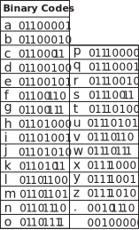
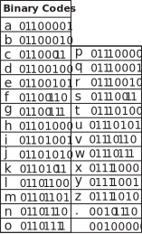

I developed a computer program that allows me to translate text into Kolam designs. Kolam (in Tamil) or Muggu (Telugu) is a traditional art form from India. Kolams are auspicious drawings on the floor (usually at the threshold of the home) using rice flour. Kolams are traditionally made by women and created before sunrise. They comprise mathematically complex patterns that feature continuous intertwined lines.
To encode text into Kolam designs, I first translate each character into eight-digit binary codes (made from only 0s and 1s). I then use an algorithm to map this translation onto a diamond-shaped matrix of dots. The algorithm moves top to bottom and left to right, drawing loops on each dot that correspond with either 0 or 1 according to the binary code translation of the text. The algorithm connects these loops, making sure to never connect loops associated with “0” to those associated with “1”. The center of the matrix contains blank padding space, allowing the entire pattern to be distributed evenly on the matrix, preserving the perfect square/diamond shape.
key (note this key only shows latin characters but there are binary translation charts available online for non-latin scripts as well):
 

References/Further Readings:
- Dr. Gift Siromoney
- Kolam in code recipe by Lavannya Suressh | Critical Code Cookbook
- The Kolam Tradition | American Scientist
- Significance of Kolam in Tamil Culture | Sahapedia